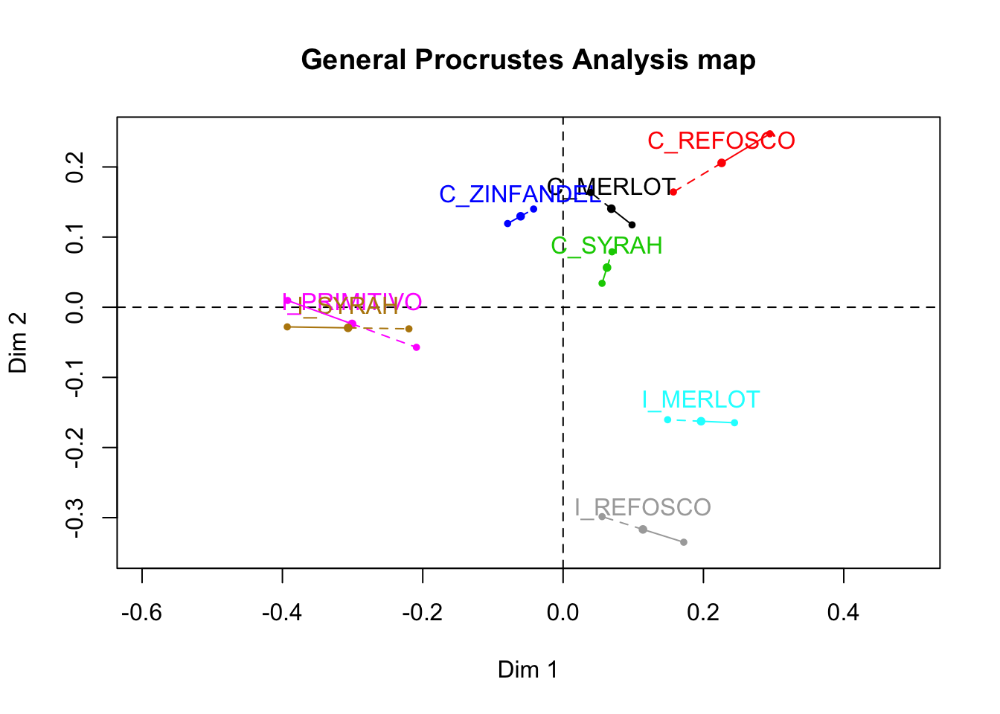
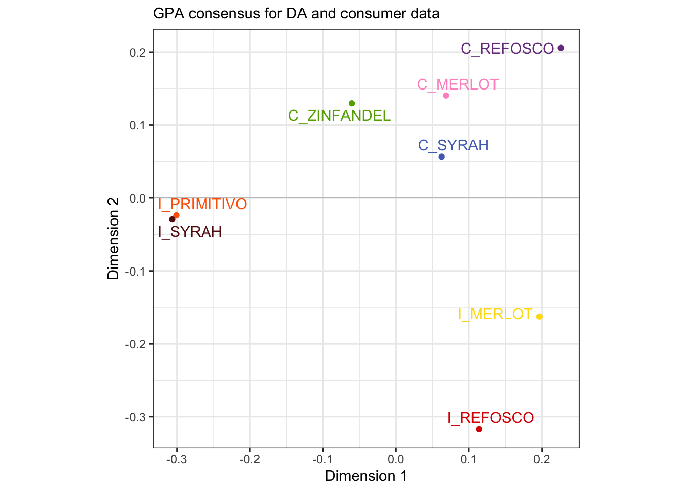
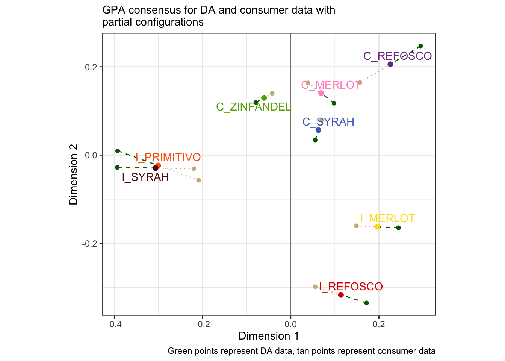
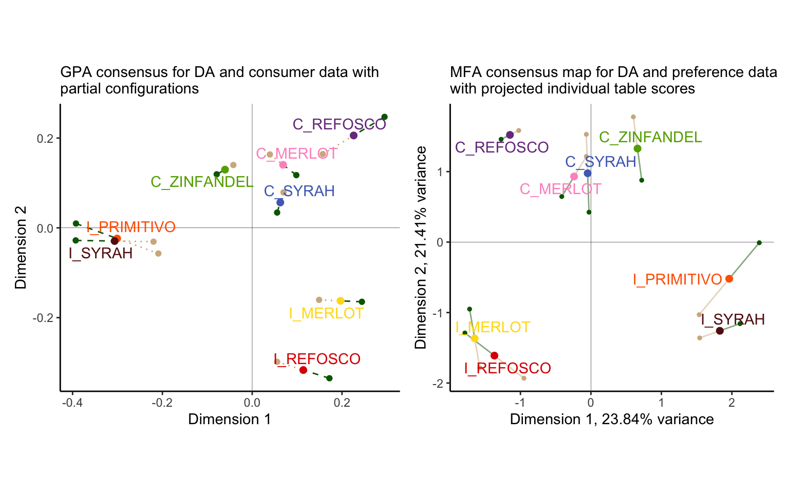

Chapter 13 Generalized Procrustes Analysis
Generalized Procrustes Analysis (GPA) is the second-to-last topic HGH tackles in the original R Opus. As a spoiler, this will be our last (substantive) topic: the coverage that HGH gave to Conjoint Analysis was cursory, and I believe that analysis of these data has moved very far forward since the original R Opus. I don’t ever use Conjoint Analysis (I leave that to my consumer-economist friends), and so I will not be including this chapter.
GPA is a “multi-table” method like MFA or DISTATIS. GPA involves a set of (I believe) linear transformations of each data table through translation, rotation, and isotropic scaling, with the goal to minimize the difference between the original tables and the consensus table. GPA was an early and popular method of aligning data from multiple subjects on the same sets of samples when those subjects are not trained. Based on my understanding, it has fallen somewhat out of favor as MFA anecdotally and actually can provide very similar results (Tomic, Berget, and Næs 2015). This can be seen in the less-updated GPA function in the FactoMineR function, and by the fact that HGH does not bother to give it much time or interpretation. GPA tends to be applied to (Ultra) Flash Profiling and Napping/Projective Mapping results, and it seems to me that those methods are less popular than they once were.
However, the same authors point out several advantages of GPA, and so it is worth digging into it a little bit! We’re going to be using the same two-table dataset: DA and consumer data.
library(tidyverse)
library(here)
library(FactoMineR)
library(paletteer)
# This is all just standard set up
descriptive_data <-
read_csv(here("data/torriDAFinal.csv")) %>%
mutate(across(1:3, ~as.factor(.)))
consumer_data <- read_csv(here("data/torriconsFinal.csv"))
consumer_demo <-
consumer_data %>%
select(Judge:Age) %>%
mutate(across(Judge:Age, ~as.factor(.)))
consumer_data <-
consumer_data %>%
select(-(`Wine Frequency`:Age)) %>%
mutate(Judge = as.factor(Judge))We then follow steps that will seem very familiar from MFA:
preference_gpa <-
descriptive_data %>%
group_by(ProductName) %>%
summarize(across(where(is.numeric), mean)) %>%
left_join(
consumer_data %>%
pivot_longer(-Judge, names_to = "wine") %>%
pivot_wider(names_from = Judge, values_from = value),
by = c("ProductName" = "wine")
) %>%
column_to_rownames("ProductName") %>%
GPA(group = c(20, 106), graph = FALSE)I initially was confused about how it is possible to run GPA with two tables with such different number of measurements: in methods like STATIS we get around the difficulty by in fact analyzing the \(\mathbf{X_iX_i^T}\), which will have the same dimensionality because each \(\mathbf{X_i}\) has the same number of rows, even if the number of colums is different. According to Gower (1975), GPA solves this problem by instead just adding null columns to the column-wise smaller \(\mathbf{X_i}\).
I believe that the GPA alignment is followed by a PCA on the consensus positions, since our points are still in 8-dimensional space (\(min(n, k_1, k_2) = 8\) for our data with \(n=8\) wines and \(k_1=20\) wines and \(k_2=106\) consumers), but this isn’t explicitly clarified by the ?GPA documentation–let’s assume so!
Typically we haven’t even wanted to look at base-R plots, but it is worthwhile to note that we can tell GPA() is less loved, because the function still outputs these, instead of the factoextra-flavored plots that other FactoMineR functions like MFA() and PCA() give us:

We know how to do better, though!
# The `$consensus` table gives us the center points
p_gpa_base <-
preference_gpa$consensus %>%
as_tibble(rownames = "wine") %>%
ggplot(aes(x = V1, y = V2)) +
geom_vline(xintercept = 0, linewidth = 1/10) +
geom_hline(yintercept = 0, linewidth = 1/10) +
geom_point(aes(color = wine)) +
ggrepel::geom_text_repel(aes(label = wine, color = wine)) +
coord_equal() +
scale_color_paletteer_d("RSkittleBrewer::smarties") +
theme_bw() +
theme(legend.position = "none") +
labs(subtitle = "GPA consensus for DA and consumer data",
x = "Dimension 1",
y = "Dimension 2")## Warning: The `x` argument of `as_tibble.matrix()` must have unique column names if
## `.name_repair` is omitted as of tibble 2.0.0.
## ℹ Using compatibility `.name_repair`.
## This warning is displayed once every 8 hours.
## Call `lifecycle::last_lifecycle_warnings()` to see where this warning was
## generated.
We can then add layers showing the projected position of our two original tables:
p_gpa_partials <-
tibble(type = c("consensus", "DA", "consumer"),
coord = list(preference_gpa$consensus,
preference_gpa$Xfin[, , 1],
preference_gpa$Xfin[, , 2])) %>%
# Get everything into a tibble
mutate(coord = map(coord, as_tibble, rownames = "wine")) %>%
# Give every dimension the same name, since `GPA()` doesn't do this right
mutate(coord = map(coord, set_names, c("wine", paste0("dim_", 1:7)))) %>%
unnest(everything()) %>%
# We're just going to do the first 2 dimensions here
select(type:dim_2) %>%
pivot_longer(dim_1:dim_2) %>%
unite(type, name, col = "dim") %>%
pivot_wider(names_from = dim, values_from = value) %>%
# Plot!
ggplot(aes(x = consensus_dim_1, y = consensus_dim_2)) +
geom_vline(xintercept = 0, linewidth = 1/10) +
geom_hline(yintercept = 0, linewidth = 1/10) +
# The projected DA data
geom_point(aes(x = DA_dim_1, y = DA_dim_2),
inherit.aes = FALSE, color = "darkgreen") +
geom_segment(aes(x = DA_dim_1, y = DA_dim_2, xend = consensus_dim_1, yend = consensus_dim_2),
inherit.aes = FALSE, color = "darkgreen", linetype = 2) +
# The projected consumer data
geom_point(aes(x = consumer_dim_1, y = consumer_dim_2),
inherit.aes = FALSE, color = "tan") +
geom_segment(aes(x = consumer_dim_1, y = consumer_dim_2, xend = consensus_dim_1, yend = consensus_dim_2),
inherit.aes = FALSE, color = "tan", linetype = 3) +
geom_point(aes(color = wine), size = 2) +
ggrepel::geom_text_repel(aes(label = wine, color = wine)) +
coord_equal() +
scale_color_paletteer_d("RSkittleBrewer::smarties") +
theme_bw() +
theme(legend.position = "none") +
labs(subtitle = "GPA consensus for DA and consumer data with\npartial configurations",
x = "Dimension 1",
y = "Dimension 2",
caption = "Green points represent DA data, tan points represent consumer data")
p_gpa_partials
We can compare this to our MFA map for reference (and to see the similarity between the methods.)
library(patchwork)
(p_gpa_partials + p_mfa) &
labs(caption = NULL) &
theme_classic() &
theme(legend.position = "none")
We can see that we get close but not exactly similar configurations!
Returning to our GPA solution, we can inspect how close our configurations are, using both \(RV\) and Procrustean similarity coefficients:
## group.1 group.2
## group.1 1.0000000 0.6674211
## group.2 0.6674211 1.0000000## group.1 group.2
## group.1 1.0000000 0.8712266
## group.2 0.8712266 1.0000000We’ve already encountered \(RV\), but to be honest I am not entirely sure what the definition of Procrustes similarity is. A quick search doesn’t really get me much more detail, nor does reviewing Gower (1975). However, from Qannari, MacFie, and Courcoux (1998) I was able to find that Procrustes similarity is defined as
\[s(X,Y)=\frac{trace(\mathbf{X^TYH})}{\sqrt{trace(\mathbf{X^TX})}\sqrt{trace(\mathbf{Y^TY})}}\]
This is clearly very close to the definition of the \(RV\) coefficient, differing mainly in that the numerator is the Procrustes rotation that adjusts \(\mathbf{Y}\) to \(\mathbf{X}\), whereas for \(RV\) the numerator instead represents the two double-centered cross-product matrices. I am not sure what the Procrustes similarity emphasizes over the \(RV\), but I believe it is more evenly influenced by dimensions in the data beyond the first principal component based on discussion in Tomic, Berget, and Næs (2015). So which should we pay attention to? I don’t have a good answer to that–it probably depends on the situation.
13.1 Packages used in this chapter
## R version 4.4.1 (2024-06-14)
## Platform: x86_64-apple-darwin20
## Running under: macOS 15.2
##
## Matrix products: default
## BLAS: /Library/Frameworks/R.framework/Versions/4.4-x86_64/Resources/lib/libRblas.0.dylib
## LAPACK: /Library/Frameworks/R.framework/Versions/4.4-x86_64/Resources/lib/libRlapack.dylib; LAPACK version 3.12.0
##
## locale:
## [1] en_US.UTF-8/en_US.UTF-8/en_US.UTF-8/C/en_US.UTF-8/en_US.UTF-8
##
## time zone: America/New_York
## tzcode source: internal
##
## attached base packages:
## [1] stats graphics grDevices datasets utils methods base
##
## other attached packages:
## [1] patchwork_1.2.0 paletteer_1.6.0 FactoMineR_2.11 here_1.0.1
## [5] lubridate_1.9.3 forcats_1.0.0 stringr_1.5.1 dplyr_1.1.4
## [9] purrr_1.0.2 readr_2.1.5 tidyr_1.3.1 tibble_3.2.1
## [13] ggplot2_3.5.1 tidyverse_2.0.0
##
## loaded via a namespace (and not attached):
## [1] gtable_0.3.5 xfun_0.49 bslib_0.7.0
## [4] htmlwidgets_1.6.4 ggrepel_0.9.5 lattice_0.22-6
## [7] tzdb_0.4.0 vctrs_0.6.5 tools_4.4.1
## [10] generics_0.1.3 parallel_4.4.1 fansi_1.0.6
## [13] highr_0.10 cluster_2.1.6 pkgconfig_2.0.3
## [16] scatterplot3d_0.3-44 lifecycle_1.0.4 farver_2.1.2
## [19] compiler_4.4.1 munsell_0.5.1 leaps_3.1
## [22] htmltools_0.5.8.1 sass_0.4.9 yaml_2.3.8
## [25] crayon_1.5.2 pillar_1.9.0 jquerylib_0.1.4
## [28] MASS_7.3-60.2 flashClust_1.01-2 DT_0.33
## [31] cachem_1.1.0 tidyselect_1.2.1 digest_0.6.37
## [34] mvtnorm_1.2-5 stringi_1.8.4 rematch2_2.1.2
## [37] bookdown_0.39 labeling_0.4.3 rprojroot_2.0.4
## [40] fastmap_1.2.0 grid_4.4.1 colorspace_2.1-0
## [43] cli_3.6.3 magrittr_2.0.3 utf8_1.2.4
## [46] withr_3.0.0 scales_1.3.0 bit64_4.0.5
## [49] estimability_1.5.1 timechange_0.3.0 rmarkdown_2.27
## [52] emmeans_1.10.2 bit_4.0.5 hms_1.1.3
## [55] coda_0.19-4.1 evaluate_0.23 knitr_1.46
## [58] rlang_1.1.4 Rcpp_1.0.13 xtable_1.8-4
## [61] glue_1.7.0 renv_1.0.9 rstudioapi_0.16.0
## [64] vroom_1.6.5 jsonlite_1.8.8 R6_2.5.1
## [67] prismatic_1.1.2 multcompView_0.1-10